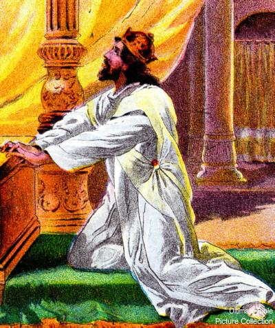

Introduction: Psalm 95 does not list its author. But the author of Hebrews quotes from Psalm 96:8 and attributes it to David (Heb. 4:7). The Latin Vulgate also names David as the author.1 David is called “the sweet psalmist of Israel.” (2 Sam. 23:1). He wrote many of the psalms, and he played an instrumental role in ensuring that God’s people properly worshiped Him. Here, David reveals seven lessons for properly worshiping God. These include: (1) joyful gratitude, (2) corporate celebration, (3) adoration, (4) reverence, (5) humility, (6) obedience, and (7) faith.
First, David urged believers to sing joyful songs of gratitude to God. Your worship should also be expressed with joy and gratitude for all God does for you. Second, David also encouraged believers to sing together with musical instruments. Your worship is also best expressed when you sing praise songs together with other believers in your church. Third, David expressed awe and love for the Creator of the universe. Your worship should also include awe and loving adoration for your Creator. Fourth, David warned believers to also approach God with reverence. Your worship should also be expressed with reverence. Fifth, David warned that the Jews refused to listen to God in the wilderness. They were too filled with pride. Your worship should also include a humble heart. Sixth, David further warned that the Jews’ constant rebellions brought God grief. Your worship also is not pleasing to God when you rebel. Obedience should instead be the fruit of your faith. Finally, the Jews’ lack of faith and resulting disobedience barred them from the Promised Land. Worship without faith is not pleasing God. With faith in Jesus, He offers you eternal life. He is again worthy of your praise and worship.
Show your love for God through worship that is filled with your appreciation for Him. David encouraged God’s people to joyfully sing praises to Him for their salvation: “1 Come, let’s sing for joy to the Lord, let’s shout joyfully to the rock of our salvation.” (Ps. 95:1). God’s Law included obligations for the Jews to express their gratitude through proper worship (Dt. 12:7, 12, 18; 14:26; 16:11-15; 26:11; 27:7). But God hates worship when it is done out of obligation (Is. 1:14). In other words, He wants your head and your heart aligned in the right place when you approach Him. “Whenever we come into God’s presence, we must come with thanksgiving.” (Matthew Henry on Ps. 95:1).2
God is worthy of your joyful praise. In your moments of tragedy, sorrow, loss, or trials, the psalms can help you to find joy by turning your focus away from yourself and back to God where it belongs. “But rejoice, all who take refuge in You, sing for joy forever! And may You shelter them, that those who love Your name may rejoice in You.” (Ps. 5:11). “I will rejoice and be jubilant in You; I will sing praise to Your name, O Most High.” (Ps. 9:2). “But the righteous will be joyful; they will rejoice before God; yes, they will rejoice with gladness.” (Ps. 68:3). “Be joyful in the LORD, you righteous ones, and praise the mention of His holy name.” (Ps. 97:12). “I will rejoice and be jubilant in You; I will sing praise to Your name, O Most High.” (Ps. 9:2). “Sing the glory of His name; make His praise glorious.” (Ps. 66:2). “I will also praise You with a harp, and Your truth, my God; I will sing praises to You with the lyre, Holy One of Israel. My lips will shout for joy when I sing praises to You; and my soul, which You have redeemed.” (Ps. 71:22-23). “Sing for joy to God our strength; shout joyfully to the God of Jacob.” (Ps. 81:1). “It is good to give thanks to the LORD and to sing praises to Your name, Most High;” (Ps. 92:1). “I rejoice at Your word, like one who finds great plunder.” (Ps. 119:162). “Praise the LORD! For it is good to sing praises to our God; for it is pleasant and praise is beautiful.” (Ps. 147:1). The New Testament also exhorts you to rejoice in God’s holy character: “Rejoice in the Lord always; again I will say, rejoice!” (Phil. 4:4). Thus, if you are merely going through the motions when you worship at church, stop and examine your heart. God does not want meaningless praise.
As our example, David’s worship was filled with genuine joy and gratitude3
Worship with thanksgiving. Your praise should also include thanksgiving. If you fail to make a habit of thanking God, you may take His blessings for granted. Even in times when he was jailed and persecuted, Paul worshiped God and gave thanks: “always giving thanks for all things in the name of our Lord Jesus Christ to our God and Father;” (Eph. 5:20). If it is not your habit to thank God for everything, stop and examine your heart.
Praise Jesus because He is the God of salvation who delivers you from death. David also praised God as the “rock of our salvation.” (Ps. 95:1). In Jesus’ day, the Sadducees doubted the existence of an afterlife. But David repeatedly praised God as the source of his “salvation”. “Salvation belongs to the LORD; may Your blessing be upon Your people! Selah” (Ps. 3:8). “The LORD lives, and blessed be my rock; and exalted be the God of my salvation, . . . He gives great salvation to His king, and shows faithfulness to His anointed, to David and his descendants forever.” (Ps. 18:46, 50; 21:1). “The LORD is their strength, and He is a refuge of salvation to His anointed.” (Ps. 28:8). God “rescue their soul from death” (Ps. 33:19). “But the salvation of the righteous is from the LORD; He is their strength in time of trouble.” (Ps. 37:39). “Help us, God of our salvation, for the glory of Your name; and save us and forgive our sins for the sake of Your name.” (Ps. 79:9). “He will call to Me, ‘You are my Father, My God, and the rock of my salvation.” (Ps. 89:26). “GOD the Lord, the strength of my salvation, You have covered my head on the day of battle.” (Ps. 140:7). “The LORD lives, and blessed be my Rock; and exalted be my God, the rock of my salvation,” (2 Sam. 22:47). This salvation included the promise of living forever with God in heaven: “It is like the dew of Hermon Coming down upon the mountains of Zion; for the LORD commanded the blessing there—life forever.” (Ps. 133:3). “The LORD is my strength and song, and He has become my salvation; this is my God, and I will praise Him; My father’s God, and I will exalt Him.” (Ex. 15:2). “Yet I will triumph in the LORD, I will rejoice in the God of my salvation.” (Hab. 3:18). If you are not regularly thanking Jesus for your salvation, you make take for granted the terrible price He paid at the cross for your sins.
Worship should include believers gathered together singing together with instruments. David further encouraged God’s people to sing together with musical instruments: “2 Let’s come before His presence with a song of thanksgiving, let’s shout joyfully to Him in songs with instruments.” (Ps. 95:2). Although you can worship alone, worship should also be done with other members of your church and your church’s worship band: “Worshiping Jesus together may be the single most important thing we do. It plays an indispensable role in rekindling our spiritual fire, and keeping it burning. Corporate worship brings together God’s word, prayer, and fellowship, and so makes for the greatest means of God’s ongoing grace in the Christian life.” (David Mathis).4
The Levites helped set the Jews’ hearts for worship with joyful music5
Worship corporately with music. To set the Jews’ hearts for proper worship, David led the Jews in corporate praise, thanksgiving, and worship: “Give thanks to the LORD, for He is good; for His faithfulness is everlasting.” (1 Chr. 16:34). The Psalms also encourage believers to praise God with songs and musical instruments: “Give thanks to the LORD with the lyre; sing praises to Him with a harp of ten strings.” (Ps. 32:2). “It is good to give thanks to the LORD and to sing praises to Your name, Most High; to declare Your goodness in the morning and Your faithfulness by night, with the ten-stringed lute and with the harp, with resounding music on the lyre. For You, LORD, have made me joyful by what You have done, I will sing for joy over the works of Your hands.” (Ps. 92:104). “Sing to the LORD with thanksgiving; sing praises to our God on the lyre;” (Ps. 147:7). “Praise Him with trumpet sound; praise Him with harp and lyre. Praise Him with tambourine and dancing; praise Him with stringed instruments and flute. Praise Him with loud cymbals; praise Him with resounding cymbals. Everything that has breath shall praise the LORD. Praise the LORD!” (Ps. 150:3-6). “Then David and all Israel played music before God with all their might, with singing, on harps, on stringed instruments, on tambourines, on cymbals, and with trumpets.” (1 Chr. 13:8). Thus, you should never skip or tune out of the worship that precedes most church sermons. You also should make a point of worshiping with others. Many can attest to feeling the presence of the Holy Spirit when two or more are gathered together in joyful worship.
Don’t forsake the fellowship and accountability that comes from corporate worship. Believers are warned to avoid forsaking the fellowship of church setting with other believers: “not abandoning our own meeting together, as is the habit of some people, but encouraging one another; and all the more as you see the day drawing near.” (Heb. 10:25). “They were continually devoting themselves to the apostles’ teaching and to fellowship, to the breaking of bread and to prayer.” (Acts 2:42). Corporate worship also helps to ensure that you can be encouraged in times of need and held accountable.
Your worship should also show your sincere, awe-struck love for God. David marveled that He had a relationship with the awesome Creator of the universe: “3 For the Lord is a great God and a great King above all gods, 4 in whose hand are the depths of the earth, the peaks of the mountains are also His. 5 The sea is His, for it was He who made it, and His hands formed the dry land.” (Ps. 95:3-5). “Have you ever felt a surge of awe, a rush of love so powerful it takes your breath away? That’s the essence of adoration – a deep reverence, a sense of wonder that transcends words.” (Mandy Watson).6
Worship with a love for God. The psalms can help you express your love and adoration for God. Saint Augustine, who lived between 354 to 430 A.D., wrote how the psalms brought him to a state of humility and love for God: “In what accounts I addressed Thee, my God, when I read the Psalms of David, those faithful songs, the language of devotion which banishes the spirit of pride . . . How I addressed Thee in those Psalms! How my love for Thee was kindled by them! How I burned to recite them, were it possible, throughout the world, as an antidote for the pride of humanity.”7
Worship with adoration God’s amazing character. David marveled: “For the Lord is a great God and a great King above all gods,” (Ps. 95:3). Moses was also amazed that he was privileged to worship the one true God, who is unlike any pagan idol: “Who is like You among the gods, LORD? Who is like You, majestic in holiness, awesome in praises, working wonders?” (Ex. 15:11). “Now I know that the LORD is greater than all the gods; indeed, it was proven when they acted insolently against the people.” (Ex. 18:11). “For great is the LORD, and greatly to be praised; He is to be feared above all gods.” (Ps. 96:4). “For You are the LORD Most High over all the earth; You are exalted far above all gods.” (Ps. 97:9). Does your worship include adoration for who God is?

Worship your Creator with awe and loving adoration8
Worship God’s “awesome” works. The word “awesome” is frequently used to describe God’s magnificent and righteous works: “ . . . let all the inhabitants of the world stand in awe of Him.” (Ps. 33:8b). “How awesome are Your works!” … “ who is awesome in His deeds…” (Ps. 66:3, 5). “By awesome deeds You answer us in righteousness, God of our salvation, You who are the trust of all the ends of the earth and the farthest sea;” (Ps. 66:5). “And in Your majesty ride on victoriously, for the cause of truth, humility, and righteousness; let Your right hand teach You awesome things.” (Ps. 45:4). “Whatever the LORD pleases, He does, in heaven and on earth, in the seas and in all the ocean depths.” (Ps. 135:6). “So he said to them, “I am a Hebrew, and I fear the LORD God of heaven who made the sea and the dry land.” (Jonah 1:9). Although the adjective “awesome” is commonly used in English, the Jews reserved the Hebrew noun “awe” (yirah (יראה)) for the holy things of God, something worthy to be feared. Jesus is worthy of your awe and reverence. He created the universe out of love for mankind. Do you worship Jesus with heartfelt adoration and awe for His amazing works?
Worship should show God the respect that He is owed. Although David loved to joyfully worship God with song and dance, he knew that God also deserved respect: “6 Come, let’s worship and bow down, let’s kneel before the Lord our Maker.” (Ps. 95:6). “With humble reverence, and a holy awe of Him; as becomes those who know what an infinite distance there is between us and Him, how much we are in danger of His wrath, and in how great need we stand of His mercy.” (Benson’s Commentary on Ps. 95:6).9 “It is not always easy to unite enthusiasm with reverence, and it is a frequent fault to destroy one of these qualities while straining after the other.” (Charles Spurgeon on Ps. 95).10
David worshiped God with reverence11
Worship should be a reverent celebration. Worship should also include reverence for the majesty of the holy Creator of the universe: “Let all the earth fear the LORD; . . .” (Ps. 33:8a). “God blesses us, so that all the ends of the earth may fear Him.” (Ps. 67:7). “Worship the LORD in holy attire; tremble before Him, all the earth.” (Ps. 96:9). “So the nations will fear the name of the LORD, and all the kings of the earth, Your glory.” (Ps. 102:15). “Therefore, since we receive a kingdom which cannot be shaken, let’s show gratitude, by which we may offer to God an acceptable service with reverence and awe;” (Heb. 12:28). “If you address as Father the One who impartially judges according to each one’s work, conduct yourselves in fear during the time of your stay on earth;” (1 Pet. 1:17). This means that worship should not be overly casual, carnal, or worldly.
Every person will one day bow before Jesus in worship. Bowing before someone may offend a person’s sense of pride. But pride has no place in worship. Indeed, every person will one day bow before Jesus with reverence: “I have sworn by Myself; the word has gone out from My mouth in righteousness and will not turn back, that to Me every knee will bow, every tongue will swear allegiance.” (Is. 45:23). “For it is written: ‘As I live, says the LORD, to Me every knee will bow, and every tongue will give praise to God.”’ (Ro. 14:11). “so that at the name of Jesus every knee will bow, of those who are in heaven and on earth and under the earth,” (Phil. 2:10). “For this reason I bend my knees before the Father,” (Eph. 3:14). Worship can be celebrated through different traditions and styles. But do you approach God with the reverence that He is owed?
Allow your worship to be pleasing to God by approaching Him in humility. David warned the Jews that they were God’s sheep. To please God, they needed humble themselves before Him: “7 For He is our God, and we are the people of His pasture and the sheep of His hand. Today, if you will hear His voice, 8 do not harden your hearts as at Meribah, as on the day of Massah in the wilderness,” (Ps. 95:7-8). At Meribah and Massah, the Jews were stiff-necked and quarreled with God. They tested Him instead of humbling themselves before Him (Ex. 17:2, 7; Nu. 20:13; Dt. 6:16). “Yahweh is also worthy of our humble worship because He is our God . . . The strong words in the second half of this psalm are connected to the sweet, stirring words of the first half. Humble worship of Yahweh and the recognition of Him as Creator and God should lead to a listening ear and a soft, surrendered heart toward Him. There is something wrong when the worshipper does not obey and trust God.” (David Guzik on Ps. 95).12
Approach God with humility so that the Holy Spirit can instruct you13
Humble yourself before the Good Shepherd. David stated: “we are the people of His pasture and the sheep of His hand.” (Ps. 95:7). This means that we are like sheep before Him: “So we Your people and the sheep of Your pasture will give thanks to You forever; to all generations we will tell of Your praise.” (Ps. 79:13). “Know that the LORD Himself is God; it is He who has made us, and not we ourselves; we are His people and the sheep of His pasture.” (Ps. 100:3). “For you were continually straying like sheep, but now you have returned to the Shepherd and Guardian of your souls.” (1 Pet. 2:25). Jesus wants you to humble yourself and declare Him to be your shepherd: “A Psalm of David. The LORD is my shepherd, I will not be in need.” (Ps. 23:1). He is the Good Shepherd who laid His life down to save His sheep: “I am the good shepherd; the good shepherd lays down His life for the sheep.” (Jo. 10:11). Sheep are not known for being the smartest animals. Do you see yourself as like a sheep before Jesus, the Good Shepherd?
Humble yourself in worship to allow the Holy Spirit to guide you. In Hebrews, the author quotes from Psalm 95:7-8 to reveal that believers must humble themselves for the Holy Spirit to be able to speak to them and guide them: “Therefore, just as the Holy Spirit says, ‘Today if you hear His voice, so not harden your hearts as when they provoked Me, as on the day of trial in the wilderness,”’ (Heb. 3:7-8). The author of Hebrews then attributes Psalm 96:8 to David: “He again sets a certain day, “Today,” saying through David after so long a time just as has been said before, ‘Today if you hear His voice, do not harden your hearts.” (Heb. 4:7). Thus, when you worship and humble yourself, God can speak to you. But you must be careful to listen to His instruction: “Hear, My people, and I will admonish you; Israel, if you would listen to Me! . . . Oh that My people would listen to Me, That Israel would walk in My ways!” (Ps. 81:8, 13). If you humble yourself before Jesus, you will hear His voice and guidance: “I am the good shepherd, and I know My own, and My own know Me,” (Jo. 10:14).
For your worship to be pleasing, let obedience be the fruit of your faith. David warned the Jews not to repeat the mistakes of their ancestors, who constantly rebelled against God in the wilderness: “9 ‘When your fathers put Me to the test, they tested Me, though they had seen My work. 10 For forty years I was disgusted with that generation, and said they are a people who err in their heart, and they do not know My ways.” (Ps. 95:9-10). They only caused God grief: “How often they rebelled against Him in the wilderness and grieved Him in the desert!” (Ps. 78:40). “For who provoked Him when they had heard? Indeed, did not all those who came out of Egypt led by Moses?” (Heb. 3:16).
Worship Jesus by obeying His commandments out of love and not obligation. Jesus says that if you love Him, you will keep His “Commandments”: “If you love Me, you will keep My commandments.” (Jo. 14:15, 21; 15:10; 1 Jo. 5:3; 2 Jo. 1:6). “[I]f you wish to enter into life, keep the commandments.” (Matt. 19:17). He is the great “I AM” who gave Moses the Ten Commandments (Jo. 8:58; Ex. 3:14). But Jesus came to correct people’s motives in following the Ten Commandments. He wants your obedience to be motivated by love and not obligation. He therefore summarized the Ten Commandments as something that comes naturally once a person loves the Lord and his or her neighbor (Matt. 22:35-38; Lk. 10:27; Dt. 6:5). Moses taught us to live obediently as it is written. Jesus taught us to love obediently as it is written. Whether we keep the Ten Commandments out of love (and not obligation) is also the test regarding whether we really “know” Jesus: “By this we know that we have come to know Him, if we keep His commandments.” (1 Jo. 2:3). Some will come to Jesus boasting of their works or compliance with the Law. Yet, if their works or their compliance with the Law was not motivated by a love for Him, He may respond “I never knew you.” (Matt. 7:23). If you obey the Law for the right reasons, you become a slave to righteousness. If you do not obey the Law, you become a slave to sin (Ro. 6:12, 16; Jo. 8:34).
Jesus knows His sheep. The psalms are all about Jesus. He “knows” every person that He has made “righteous”, and He will carefully protect them as the Good Shepherd: “I am the good shepherd, and I know My own, and My own know Me,” (Jo. 10:14). The evidence that Jesus is your Shepherd is evidenced through your obedience to His voice: “My sheep listen to My voice, and I know them, and they follow Me;” (Jo. 10:27).
Jesus wants to bless you when you walk in Spirit-led obedience with Him. The blessings that Jesus offers you when you obey is “contentment.” “But happy is he who keeps the Law.” (Prov. 29:18). If you “know” the “way” of the Lord by meditating on His Word, Jesus also promises blessings in heaven for those who are faithful and obedient: “If you know these things, you are blessed if you do them.” (Jo. 13:17; Matt. 6:4; 10:41; Rev. 2:26). If your motives are right and it is God’s will, the rewards for faith-led obedience may also be received in this lifetime: “Walk in all the way that the Lord your God has commanded you, so that you may live and prosper and prolong your days in the land that you will possess.” (Dt. 5:32-33; 4:40; Lev. 18:5). “Moreover, by them Your servant is warned; in keeping them there is great reward.” (Ps. 19:11). “Surely there is a reward for the righteous . . .” (Ps. 58:11). “But you, be strong and do not lose courage, for there is reward for your work.” (2 Chr. 15:7). “So keep the words of this covenant to do them, that you may prosper in all that you do.” (Dt. 29:9). “[H]e who sows righteousness gets a true reward.” (Prov. 11:18). But you should never expect a blessing. Are you putting yourself in a place where God can bless you? Are you storing up blessings in heaven?
Fear God by hating evil. Through his many mistakes, Solomon learned that God’s wisdom required fearing Him: “The fear of the LORD is the beginning of knowledge; fools despise wisdom and instruction.” (Prov. 1:7; 2:5). “The conclusion, when all has been heard, is: fear God and keep His commandments, because this applies to every person.” (Ecc. 12:13; Ps. 111:10; 1 Sam. 12:24). Solomon defined the fear of the Lord as “hating” evil (Prov. 8:13). Solomon was the wisest and richest man to ever live (1 Kgs. 3:12, 4:30; 10:23). “I said to myself, ‘Behold, I have magnified and increased wisdom more than all who were over Jerusalem before me; and my mind has observed a wealth of wisdom and knowledge.”’ (Ecc. 1:16). Yet, without the fear of God, his wisdom, knowledge, and wealth did not prevent him from descending into covetousness, rebellion, and idolatry. His life is a warning to all believers. Unless you cling to Jesus, knowledge, wisdom, and wealth cannot save you from drifting in your walk from Him.
For your worship to be pleasing, you have to have faith in God. Finally, David warned that the Jews’ lack of faith and resulting disobedience prevented them from entering the Promised Land: “11 Therefore I swore in My anger, they certainly shall not enter My rest.”’ (Ps. 95:11). “There can be no rest to an unbelieving heart. If manna and miracles could not satisfy Israel, neither would they have been content with the land which flowed with milk and honey.” (Charles Spurgeon on Ps. 95:11) (italics added).14
A lack of faith can preclude a person from God’s eternal rest. Moses stated that the Jews’ lack of faith and resulting disobedience barred them from entering the Promised Land: “Not one of these men, this evil generation, shall see the good land which I swore to give your fathers,” (Dt. 1:35; Ezek. 20:15). “By no means will you come into the land where I swore to settle you, except for Caleb the son of Jephunneh and Joshua the son of Nun.” (Nu. 14:30). The author of Hebrews quoted from Psalm 95:11 no less than three times to stress that the “rest” that they rejected foreshadowed the eternal rest that Jesus offers in the afterlife: “As I swore in My anger, they certainly shall not enter My rest.”’ (Heb. 3:11). “For we who have believed enter that rest, just as He has said, ‘As I swore in My anger, they certainly shall not enter My rest,’ although His works were finished from the foundation of the world. . . and again in this passage, ‘They certainly shall not enter my rest’.” (Heb. 4:3, 5). Eternal salvation is also not possible without faith (Jo. 3:16).
Without faith, your worship is not pleasing to God. Like the Jews who fled Egypt, your worship will not be pleasing to God if you lack faith: “And without faith it is impossible to please Him, for the one who comes to God must believe that He exists, and that He proves to be One who rewards those who seek Him.” (Heb. 11:6). “Thus the very statement that Enoch pleased God is an assertion that in him faith was found. No one can be the habitual worshiper of God (this is what the phrase implies) if his faith does not grasp these two truths.” (Ellicot’s Commentary for English Readers on Heb. 11:6).15 Thus, if you worship God without believing in Him, your worship is meaningless.
Worship helps to put your trust in God. Learning to sing God’s praises in good times and bad times also helps you to learn to place your trust in Him. When the enemy convinces you that your situation is hopeless or impossible, worship helps you to put your trust in God to deliver you from your battles. David proclaimed that he would rather trust in God than a mighty army (Ps. 20:7). “All the ends of the earth will remember and turn to the LORD, and all the families of the nations will worship before You.” (Ps. 22:27). David also put his trust in God when all hope of victory and survival seemed lost: “Protect me, God, for I take refuge in You. . . For You will not abandon my soul to Sheol;” (Ps. 16:1, 10). “Even though I walk through the valley of the shadow of death, I fear no evil, for You are with me; Your rod and Your staff, they comfort me.” (Ps. 23:4). The Psalms will also help you to put your trust in God.
Worship also helps to attract others to Jesus. You are the only Bible that some will ever read. If others see you respond to a trial with faith, joy, and gratitude, they may be attracted to the hope that lies within you. Do others see Jesus in your worship life?
Image credit: Qual Era A Função Dos Levitas - ENSINO (dzp.pl)↩︎
The Confessions of St. Augustine, ix 4, in A Select Library of Nicene and Post-Nicene Fathers of the Christian Church, ed. By Philip Schaff (Edinburgh: T & T Clark, 1994 reprint), p. 131. ↩︎
Image credit: www.psalmsquotes.com↩︎